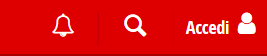
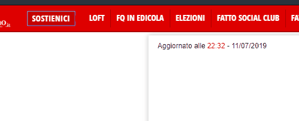
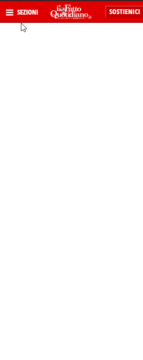
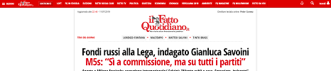
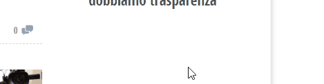
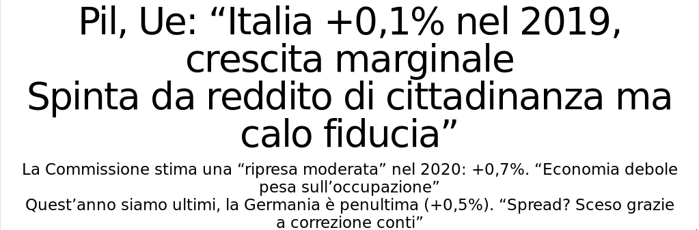

Linee guida per l’accessibilità dei contenuti Web (WCAG) 2.1
Introduzione
La valutazione di conformità è stata effettuata nei riguardi delle linee guida WCAG 2.1. Tali linee guida prevedono diversi livelli di orientamento che comprendono principi globali, linee guida generali, criteri di successo verificabili e una ricca raccolta di tecniche sufficienti e consigliate.
- Principi
- Al livello più alto, sono definiti i quattro principi fondamentali dell’accessibilità sul Web: percepibile, utilizzabile, comprensibile e robusto.
- Linee guida
- Dai quattro principi derivano tredici linee guida. Le linee guida forniscono gli obiettivi di base su cui gli autori dovrebbero lavorare per rendere i contenuti accessibili agli utenti.
- Criteri di successo
- Per ogni linea guida vengono forniti criteri di successo verificabili per consentire l’utilizzo delle WCAG 2.1 per test dei requisiti e della conformità. Vengono definiti tre livelli di conformità: A (minimo), AA e AAA (massimo).
- Tecniche sufficienti e consigliate
- Le tecniche sono informative e possono essere di due categorie: quelle sufficienti a soddisfare il criterio di successo e quelle consigliate. Le tecniche consigliate vanno oltre ciò che viene richiesto da ciascun singolo criterio di successo e consentono di rispettare meglio le linee guida.
Tutti questi livelli di orientamento (principi, linee guida, criteri di successo, tecniche sufficienti e consigliate) concorrono a fornire indicazioni su come rendere il contenuto più accessibile.
Sono stati utilizzati diversi strumenti come supporto alla valutazione di conformità alle linee guida WCAG 2.1.
I browser Web Mozilla Firefox Developer Edition e Google Chrome
Markup Validation Service W3C
CSS Validation Service W3C
Web Accessibility Evaluation Tool WAVE
Color Contrast Accessibility Validator a11y
Color Contrast Checker - WebAIM che fornisce un rapporto per sapere quanto è accessibile un sito Web e come migliorarlo.
Accessibility Inspector che fornisce un mezzo per accedere alle informazioni importanti esposte alle tecnologie assistive nella pagina corrente tramite l’albero di accessibilità.
Lighthouse che è uno strumento automatizzato open-source per migliorare la qualità delle pagine web. Ha Audits per prestazioni, accessibilità, buone pratiche, applicazioni web progressive e altro.
Perimetro dell’indagine
Per la valutazione dei criteri di conformità alle linee guida WCAG 2.1 sono state selezionate le seguenti pagine:
Home page del sito il Fatto Quotidiano
Un articolo estratto dalla Home page
La pagina Archivi
La pagina di Login
La pagina delle Previsioni Meteo
Risultati del report
Il sito analizzato presenta grosse problematiche di accessibilità e ciò rende difficile la fruizione dei contenuti agli utenti con particolari necessità.
Viene fatto un largo uso di immagini di testo non essenziali per veicolari informazioni per le quali sarebbe stato più opportuno del puro testo. La funzionalità di auto-refresh nella home page è un ulteriore esempio di grave deficenza del sito: oltre il suo essere fastidiosa per l’utente medio, può provocare non pochi problemi ad alcuni utenti dato che non può essere fermato o regolato.
Le pagine esaminate non sempre sfruttano correttamente gli elementi semantici dell’HTML, fino ad arrivare a contenere frammenti non corretti o palesemente malformati.
Alcune sezioni delle pagine richiedono l’ausilio di un mouse, rendendo difficile la vita a utenti che, per varie problematiche, devono navigare le pagine web da tastiera. I feedback inoltre sono assenti in alcuni casi.
Il sito, quindi, risulta NON CONFORME a nessun livello di conformità previsto dalle linee guida WCAG 2.1.
Requisiti di conformità
Nella valutazione di conformità dei vari criteri di successo l’esito è stato espresso nei termini di:
- Positivo
- Tutte le pagine esaminate rispettano completamente le direttive espresse da quel criterio di successo
- Negativo
- Una o più pagine esaminate non rispettano il criterio di successo
- Non applicabile
- Per tutte le pagine esaminate il criterio di successo non è applicabile
Glossario
- ARIA
- Accessible Rich Internet Applications. ARIA definisce le modalità con cui sviluppatori di browser, media player, dispositivi mobili e tecnologie assistive, cosí come gli sviluppatori di contenuti, possono migliorare l’accessibilità cross-platform.
- Braille
- Un sistema di lettura e scrittura tattile a rilievo per non vedenti e ipovedenti.
- Breadcrumb
- letteralmente “Briciole di pane”. È una tecnica di navigazione per interfacce utente: il loro scopo è quello di indicare all’utente in quale pagina si trovano e come raggiungere tale pagina attraverso una sequenza di pagine del sito. Ad esempio: “Home → Sezioni → Mondo”.
- Browser Web
- Qualsiasi programma che recuperi e presenti contenuti Web agli utenti
- CHAPTCHA
- Sigla per “Completely Automated Public Turing test to tell Computers and Humans Apart” (Test di Turing pubblico e completamente automatizzato, allo scopo di distinguere gli esseri umani dai computer)
- CSS
- Cascading Style Sheet, linguaggio usato per definire la resa grafica degli elementi di una pagina Web
- CSS pixel
- Un CSS pixel è l’unità di misura canonica per tutte le lunghezze e misure in CSS. Questa unità è indipendente dalla densità e distinta dai pixel hardware effettivi presenti in un display.
- Header HTTP
- Un’intestazione HTTP, come prevista dal protocollo. Sono piccole informazioni che precedono il contenuto della pagina web
- HTML
- Hyper Text Markup Language, linguaggio di markup con il quale sono realizzate le pagine Web
- input
- Un elemento HTML che permette all’utente di inserire un contenuto (sia esso testo, file, preferenza o altro)
- link
- Collegamento tra due pagine Web
- Pagina Web
- Risorsa non incorporata ottenuta da un unico URI utilizzando HTTP più qualunque altra risorsa utilizzata per il rendering
- Screenshot, screen
- foto di una parte o di tutto il monitor.
- spec
- Abbreviazione di “specifica”
- WCAG
- Web Content Accessibility Guidelines, attualmente alla versione 2.1
Sommario dei risultati
Indice dei contenuti
Percepibile §
Le informazioni e i componenti dell’interfaccia utente devono essere presentati agli utenti in modi in cui essi possano percepirli.
Alternative testuali §
Fornire alternative testuali per qualsiasi contenuto non di testo in modo che questo possa essere trasformato in altre forme fruibili secondo le necessità degli utenti come stampa a caratteri ingranditi, Braille, sintesi vocale, simboli o un linguaggio più semplice.
Contenuti non testuali §
Livello: A
Tutti i contenuti non testuali presentati all’utente hanno un’alternativa testuale equivalente che serve allo stesso scopo, ad eccezione dei seguenti casi
- Controlli, input
- Se il contenuto non testuale è un controllo o accetta l’input degli utenti, allora ha un nome che ne descrive la finalità.
- Media temporizzati
- Se il contenuto non testuale è un media temporizzato, allora le alternative testuali forniscono almeno una identificazione descrittiva per il contenuto non testuale.
- Test
- Se il contenuto non testuale è un test o un esercizio che potrebbe essere non valido se presentato come testo, allora le alternative testuali forniscono almeno una descrizione identificativa del contenuto non testuale.
- Esperienze sensoriali
- Se il contenuto non testuale ha lo scopo primario di creare una specifica esperienza sensoriale, allora le alternative testuali forniscono almeno una descrizione identificativa del contenuto non testuale.
- CAPTCHA
- Se la finalità del contenuto non testuale è confermare che il contenuto sia utilizzato da una persona e non da un computer, allora sono fornite alternative testuali che identifichino e descrivano lo scopo del contenuto non testuale, e forme alternative di CAPTCHA che usino diverse modalità di output per differenti tipologie di percezioni sensoriali al fine di soddisfare differenti disabilità.
- Decorazioni, formattazioni, contenuti invisibili
- Se il contenuto non testuale è puramente decorativo, è utilizzato solamente per formattazione visuale oppure non è presentato agli utenti, allora è implementato in modo da poter essere ignorato dalla tecnologia assistiva.
Esito: Negativo
Violazioni riscontrate:
Manca una descrizione testuale per l’icona “search” nella barra di navigazione.
Non sono presenti gli attributi “alt” che forniscono una descrizione testuale dell’immagine, la quale ne descrive i contenuti per chi non può vederla (in particolare nelle foto degli articoli).
Al momento, le immagini senza l’attributo “alt” sono 69.
Abbiamo utilizzato questo script JavaScript per ricavare la lista delle immagini senza l’attributo “alt”
// Lista delle immagini alle quali manca l'attributo alt
Array.prototype.filter.call(document.querySelectorAll('img'), i => !i.alt)
Screen d’esempio

Code snippets
<!-- Logo Home page -->
<img src="https://st.ilfattoquotidiano.it/wp-content/themes/ifq/assets/img/logo-header-navbar.png" alt="">
<!-- Articoli -->
<img class="attachment-primopiano img-landscape" src="https://st.ilfattoquotid…/2015/04/finanza-990.jpg" alt="" width="990" height="192">
<img class="lazyload" data-src="https://st.ilfattoquotid…adalajara675-320x132.jpg" alt="" width="320" height="132">
<img class="lazyload" data-src="https://st.ilfattoquotid…2/bersani675-320x132.jpg" alt="" width="320" height="132">
<img class="lazyload" data-src="https://st.ilfattoquotid…2/viagola675-320x132.jpg" alt="" width="320" height="132">
<img class="lazyload" data-src="https://st.ilfattoquotid…vecchia-1300-320x132.jpg" alt="" width="320" height="132">
Rimedi proposti
Inserire il valore dell’attributo alt sugli elementi img
Usare gli aria-label per fornire etichette agli oggetti
<!-- Logo Home page -->
<img src="https://st.ilfattoquotidiano.it/wp-content/themes/ifq/assets/img/logo-header-navbar.png" alt="ilfattoquotidiano">
<!-- Articoli -->
<img class="attachment-primopiano img-landscape" src="https://st.ilfattoquotid…/2015/04/finanza-990.jpg" alt="Lavoro: Liberalizzare il mercato non spinge l'economia" width="990" height="192">
<img class="lazyload" data-src="https://st.ilfattoquotid…adalajara675-320x132.jpg" alt="Un uomo contro un muro in Autostrada" width="320" height="132">
<img class="lazyload" data-src="https://st.ilfattoquotid…2/bersani675-320x132.jpg" alt="Incontro tra Bersani e Renzi" width="320" height="132">
<img class="lazyload" data-src="https://st.ilfattoquotid…2/viagola675-320x132.jpg" alt="Di Battista: ho rosicato vedere amici giurare come ministri" width="320" height="132">
<img class="lazyload" data-src="https://st.ilfattoquotid…vecchia-1300-320x132.jpg" alt="Servizio pubblico: Malasanità" width="320" height="132">
Media temporizzati §
Fornire alternative per i media temporizzati
Solo audio e solo video (preregistrati) §
Livello: A
Per i tipi di media preregistrati di solo audio e di solo video, a meno che questi non costituiscano un tipo di media alternativo ad un contenuto testuale chiaramente etichettato come tale, sono soddisfatti i seguenti punti:
- Solo audio preregistrato
- È fornita un’alternativa per il tipo di media temporizzato che presenti informazioni equivalenti al contenuto di solo audio preregistrato.
- Solo video preregistrato
- È fornita un’alternativa per il tipo di media temporizzato oppure una traccia audio che presenti informazioni equivalenti al contenuto di solo video preregistrato.
Esito: Negativo
Violazioni riscontrate:
I video pre-registrati non hanno una trascrizione testuale equivalente.
Al momento della nostra analisi, nel sito non sono presenti contenuti di solo audio.
Rimedi proposti
Le didascalie forniscono una trascrizione e possibilmente una traduzione dell’audio.
<video controls width="400" height="500" src="/media/IlFattoQuotidiano.it/Politica/video.mp4 ">
<track default kind="captions" srclang="it" src="/media/IlFattoQuotidiano.it/Politica/video.vtt"/>
</video>
Sottotitoli (preregistrati) §
Livello: A
Per tutti i contenuti audio preregistrati presenti in tipi di media sincronizzati sono forniti sottotitoli, eccetto quando tali contenuti sono alternativi ad un contenuto testuale e sono chiaramente etichettati come tali.
Esito: Negativo
Violazioni riscontrate:
I video presenti nelle pagine del sito non hanno sottotitoli.
Rimedi proposti
I sottotitoli forniscono la traduzione di contenuti che non possono essere compresi da chi visualizza il video.
<video controls width="400" height="500" src="/media/IlFattoQuotidiano.it/Politica/video.mp4 ">
<track default kind="subtitles" srclang="it" src="/media/IlFattoQuotidiano.it/Politica/video.vtt"/>
</video>
Audiodescrizione (preregistrato) §
Livello: A
Per i media sincronizzati è fornita un’alternativa ai media temporizzati, oppure una audiodescrizione dei contenuti video preregistrati, eccetto quando il contenuto audio o video è alternativo ad un contenuto testuale ed è chiaramente etichettato come tale.
Esito: Negativo
Violazioni riscontrate:
Non sono state fornite alternative ai media temporizzati e non vi sono audiodescrizioni dei contenuti video preregistrati.
Rimedi proposti
Descrizione testuale del contenuto del video, adatto per utenti non vedenti o dove non è possibile vedere il video.
<video controls width="400" height="500" src="/media/IlFattoQuotidiano.it/Politica/video.mp4 ">
<track default kind="descriptions" srclang="it" src="/media/IlFattoQuotidiano.it/Politica/video.vtt"/>
</video>
Sottotitoli (in tempo reale) §
Livello: AA
Per tutti i contenuti audio in tempo reale sotto forma di media sincronizzati sono forniti sottotitoli.
Esito: Non applicabile
Violazioni riscontrate:
Al momento sono presenti solo video preregistrati, quindi questo punto non si applica.
Audiodescrizione (preregistrata) §
Livello: AA
Per tutti i contenuti video preregistrati sotto forma di media sincronizzati è fornita una audiodescrizione.
Esito: Negativo
Violazioni riscontrate:
Non sono presenti audiodescrizioni in nessun video preregistrato.
Lingua dei segni (preregistrato) §
Livello: AAA
Per tutti i contenuti audio preregistrati sotto forma di media sincronizzati è fornita l’interpretazione tramite lingua dei segni.
Esito: Non applicabile
Violazioni riscontrate:
Non sono presenti contenuti audio preregistrati, quindi questo criterio di successo non si applica.
Audiodescrizione estesa (preregistrata) §
Livello: AAA
Per tutti i contenuti video preregistrati in media sincronizzati, se le pause nell’audio principale sono troppo brevi per consentire alle audiodescrizioni di comunicare il senso del video, sono fornite delle audiodescrizioni estese.
Esito: Negativo
Violazioni riscontrate:
Non sono presenti audiodescrizioni, quindi nemmeno audiodescrizioni estese.
Tipo di media alternativo (preregistrato) §
Livello: AAA
Per tutti i contenuti preregistrati di media sincronizzati e per tutti i tipi di media preregistrati di solo video è fornito un tipo di media alternativo.
Esito: Negativo
Violazioni riscontrate:
Non sono forniti media alternativi per nessuno dei media preregistrati di solo video.
Solo audio (in tempo reale) §
Livello: AAA
Per i media temporizzati che presentano informazioni equivalenti a contenuti solo audio in tempo reale è fornita un’alternativa.
Esito: Negativo
Violazioni riscontrate:
Non è presente nessuna alternativa ai contenuti di solo audio in tempo reale.
Adattabile §
Creare contenuti che possano essere rappresentati in modalità differenti (ad esempio, con layout più semplici), senza perdere informazioni o struttura.
Informazioni e correlazioni §
Livello: A
Le informazioni, la struttura e le correlazioni trasmesse dalla presentazione possono essere determinate programmaticamente oppure sono disponibili tramite testo.
Esito: Negativo
Violazioni riscontrate:
L’elemento p non può essere figlio di un h2
Code snippets
<h2 class="title" data-vr-excerpttitle id="desktop-1-1-strilli-row1-1-secondopiano2col-title">
<p>
<a href="https://www.ilfattoquotidiano.it/2019/07/04/ndrangheta-le-mani-su-tre-parcheggi-di-malpensa-34-arresti-in-8-province-anche-un-consigliere-comunale-di-ferno/5300253/">Le mani della ‘ndrangheta sui parcheggi<br/>
dell’aeroporto di Malpensa: 34 arrestati<br/>
<span style="color: #dd0015;">Ombre su elezione ex sindaco di Lonate</span>
</a>
</p>
</h2>
L’elemento p non può essere figlio di un elemento di tipo span
Code snippets
<span class="no-mobile">
<p>Si è spesso discusso del rapporto dei trattati europei con la Costituzione italiana.</p>
</span>
Non vengono utilizzati i punti di riferimento ARIA per identificare le regioni di una pagina
Non vengono implementati i
role="heading"per identificare i titoliNon c’è un utilizzo appropriato di elementi semantici per contrassegnare la struttura delle pagine (es: molti titoli sono un
pdentro unh2)Non viene utilizzata della marcatura semantica per contrassegnare il testo enfatizzato o speciale (es: non usano correttamente il tag
quoteper le citazioni)Violata la separazione delle informazioni e della struttura dalla presentazione per abilitare presentazioni diverse
- Si fa largo uso degli attributi
stylenell’HTML per cambiare le proprietà visuali degli elementi
- Si fa largo uso degli attributi
Sequenza significativa §
Livello: A
Quando la sequenza in cui il contenuto è presentato influisce sul suo significato, la corretta sequenza di lettura può essere determinata programmaticamente.
Esito: Non applicabile
Violazioni riscontrate:
La lista nella quale gli articoli vengono mostrati non influisce sul significato dei singoli articoli, quindi questo criterio di successo non si applica.
Caratteristiche sensoriali §
Livello: A
Le istruzioni fornite per comprendere ed operare sui contenuti non si basano unicamente su caratteristiche sensoriali dei componenti quali forma, colore, dimensione, ubicazione visiva, orientamento o suono.
Esito: Negativo
Violazioni riscontrate:
I video e le foto non hanno descrizioni testuali e si basano unicamente su caratteristiche sensoriali, quindi questo punto non è rispettato.
Orientamento §
Livello: AA
La visualizzazione e il funzionamento di un contenuto non dipendono dall’orientamento dello schermo, ad esempio verticale o orizzontale, a meno che questo non sia essenziale.
Esito: Positivo
Osservazioni
Il sito funziona su monitor di diverse forme e orientamenti, quindi questo punto è rispettato.
Identificare lo scopo degli input §
Livello: AA
Lo scopo di ciascun campo di input per le informazioni sull’utente può essere determinato programmaticamente quando:
Il campo di input ha uno scopo noto, identificato nella sezione scopo dell’input per i componenti dell’interfaccia utente;
Il contenuto è implementato utilizzando tecnologie che supportino l’identificazione del significato atteso dei dati inseriti del modulo.
Esito: Negativo
Violazioni riscontrate:
Il campo di ricerca non ha nessuna descrizione/label per permettere all’utente di identificare lo scopo dell’input.
Alla textarea per i commenti manca una label/aria-label/aria-labelledby. In JavaScript viene inserita una scritta “Partecipa alla discussione”, ma non sono presenti indicazioni per collegare tale scritta alla texarea.
Il campo di ricerca nella pagina meteo presenta la dicitura “Inserisci qui la tua località” come value di un input di tipo testo. Invece, bisognerebbe usare un label/aria-label/aria-labelledby.
Code snippets
<div class="input-wrap">
<input type="text" name="q" id="q" onfocus="this.value = '';" wfd-id="5112">
</div>
<button class="basicBtn" type="submit" wfd-id="5115">Cerca</button>
Rimedi proposti
Per identificare lo scopo degli input è necessario inserire un aria-labelledby e un aria-label
<div class="input-wrap" aria-labelledby="q">
<input type="text" name="q" id="q" onfocus="this.value = '';" wfd-id="5112" aria-label="Campo per cercare contenuti del sito">
</div>
<button class="basicBtn" aria-label="Cerca" type="submit" wfd-id="5115">Cerca</button>
Identificare lo scopo §
Livello: AAA
Nei contenuti implementati utilizzando i linguaggi di markup, è possibile determinare programmaticamente lo scopo dei componenti dell’interfaccia utente, delle icone e delle aree.
Esito: Negativo
Violazioni riscontrate:
Alcuni tag HTML5 sono utilizzati correttamente (footer, header, nav, aside..), ma manga un tag main per indentificare il contenuto primario della pagina. Inoltre, i form non sono strutturati correttamente, e quindi non tutte le aree della pagina sono comprensibili.
Distinguibile §
Rendere più semplice agli utenti la visione e l’ascolto dei contenuti, separando i contenuti in primo piano dallo sfondo.
Uso del colore §
Livello: A
Il colore non deve essere utilizzato come unica modalità visiva per rappresentare informazioni, indicare azioni, richiedere risposte o come elemento di distinzione visiva.
Esito: Positivo
Osservazioni
Il colore non è l’unico modo con il quale le differenti aree della pagina sono divise. Vengono usati appropriati tag HTML5 (section e/o aside) per differenziare le diverse aree anche da un punto di vista semantico.
Controllo del sonoro §
Livello: A
Se un contenuto audio all’interno di una pagina Web è eseguito automaticamente per più di tre secondi o si fornisce una funzionalità per metterlo in pausa o interromperlo, oppure si fornisce una modalità per il controllo dell’audio che sia indipendente dal controllo predefinito del sistema.
Esito: Positivo
Osservazioni
Sono presenti video con riproduzione automatica che forniscono la possibilità di modificare il livello del volume, di mettere in pausa e interrompere la riproduzione audiosonora.
Contrasto (minimo) §
Livello: AA
La rappresentazione visiva del testo e di immagini contenenti testo ha un rapporto di contrasto di almeno 4.5:1, fatta eccezione per i seguenti casi:
- Testo grande
- Testo grande e immagini contenenti testo grande devono avere un rapporto di contrasto di almeno 3:1
- Testo non essenziale
- Testo o immagini contenenti testo che siano parti inattive di componenti dell’interfaccia utente, che siano di pura decorazione, non visibili a nessuno, oppure che facciano parte di immagini contenenti contenuti visuali maggiormente significativi, non hanno alcun requisito di contrasto
- Logotipi
- Un testo che sia parte di un logo o marchio non ha alcun requisito minimo di contrasto.
Esito: Negativo
Violazioni riscontrate:
Nella maggior parte dei testi i livelli di contrasto sono adeguati, ma ci sono alcuni elementi della pagina che non hanno un livello di contrasto ottimale come:
Il tasto condividi e il numero di commenti nelle preview degli articoli della Home page e nelle pagine di archivio
L’ora e il punteggio dei commenti
I tasti per cambiare giornata nella pagina del meteo
I titoli degli articoli nella sezione “Top Blog”
Ridimensionamento del testo §
Livello: AA
Il testo, ad eccezione dei sottotitoli e delle immagini contenenti testo, può essere ridimensionato fino al 200 percento senza l’ausilio di tecnologie assistive e senza perdita di contenuto e funzionalità.
Esito: Positivo
Osservazioni
Il sito rimane funzionante una volta impostato il livello di Zoom a 200%. Ci preme comunque sottolineare che nonostante sia funzionante sono presenti delle fastidiose barre di scrolling orizzontali: sarebbe opportuno modificare il CSS in modo tale che le pagine rimangano larghe al più quanto il monitor.
Immagini di testo §
Livello: AA
Se le tecnologie utilizzate consentono la rappresentazione visiva dei contenuti, per veicolare informazioni è usato il testo, e non le immagini di testo, ad eccezione dei seguenti casi:
- Personalizzabile
- L’immagine di testo può essere personalizzata visivamente per le esigenze dell’utente;
- Essenziale
- Una particolare rappresentazione del testo è essenziale per il tipo di informazioni veicolate.
Esito: Negativo
Violazioni riscontrate:
Vengono usate solo un paio di immagini testuali (non essenziali e/o personalizzabili), quando un testo sarebbe stato più opportuno, come:
Il box “Abbonati” nella Homepage
Il logo “Meteo” dove la scritta non è necessaria che sia inclusa nell’immagine
La scritta ‘la vignetta di’ nel box della vignetta di Natangelo non è necessaria che sia inclusa nell’immagine (mentre la scritta ‘Natangelo’, in quanto firma, rientra nella categoria delle essenziali).
Contrasto (avanzato) §
Livello: AAA
La rappresentazione visiva del testo e immagini contenenti testo ha un rapporto di contrasto di almeno 7:1, fatta eccezione per i seguenti casi:
- Testo grande
- Testo grande e immagini contenenti testo grande devono avere un rapporto di contrasto di almeno 4.5:1
- Testo non essenziale
- Testo o immagini contenenti testo che siano parti inattive di componenti dell’interfaccia utente, che siano di pura decorazione, non visibili a nessuno, oppure che facciano parte di immagini contenenti contenuti visuali maggiormente significativi, non hanno alcun requisito di contrasto.
- Logotipi
- Un testo che sia parte di un logo o marchio non ha alcun requisito minimo di contrasto.
Esito: Negativo
Violazioni riscontrate:
Alcuni esempi:
Nella pagina di login:
la stellina accanto alle voci ‘Nome utente o email’ e ‘Password’ non ha un contrasto sufficiente
tutti i pulsanti
la scritta ‘Non sei ancora registrato?’ non ha un contrasto adeguato
Nella pagina del meteo
il pulsante ‘Accedi’
la scritta ‘modifica località’ è poco visibile
tutti i pulsanti per selezionare le varie zone del mondo (Italia, Europa, Mondo)
il selettore dell’ora
Nella pagina di un articolo
il numero dei commenti
le categorie nell’aside
Sottofondo sonoro basso o non presente §
Livello: AAA
Per i contenuti di solo audio preregistrato che (1) contengano principalmente parlato in primo piano (2) non siano CAPTCHA audio o loghi audio e (3) non siano una vocalizzazione intesa per essere principalmente espressione musicale come canto o rap, si applica almeno uno dei seguenti casi:
- Nessun sottofondo
- Il sonoro non contiene suoni di sottofondo.
- Spegnimento
- Il sottofondo sonoro può essere disattivato.
- 20 dB
- Il sottofondo sonoro deve essere inferiore di almeno 20 decibel rispetto al parlato in primo piano, con l’eccezione di suoni occasionali di durata massima di uno o due secondi.
Esito: Positivo
Osservazioni
Non esistono pagine con solo audio preregistrato e i video con autoplay sono muti in partenza, quindi questo punto è rispettato.
Presentazione visiva §
Livello: AAA
Per la presentazione visiva di blocchi di testo, è disponibile una modalità per conseguire i seguenti obiettivi:
I colori del testo in primo piano e dello sfondo possono essere scelti dall’utente. La larghezza non supera gli 80 caratteri o glifi (40 se CJK). Il testo non è giustificato (allineato sia al margine destro che al sinistro). Lo spazio tra righe (interlinea) è almeno di uno spazio e mezzo all’interno del paragrafo e lo spazio tra paragrafi, è almeno una volta e mezzo l’interlinea. Il testo può essere ridimensionato fino al 200 percento senza il supporto di tecnologie assistive in modo da non richiedere all’utente di dover scorrere orizzontalmente per leggere una riga di testo in una finestra a tutto schermo.
Esito: Negativo
Violazioni riscontrate:
L’unico punto passato è ‘il testo non è giustificato’
[ ] Il sito non permette di cambiare i colori in primo piano e dello sfondo
[ ] La larghezza del testo dipende dalla dimensione della finestra e non è possibile imporre un limite a 80 caratteri
[x] Il testo non è giustificato
[x] Lo spazio tra le righe è almeno di 1.5 e lo spazio tra paragrafi è almeno una volta e mezzo l’interlinea
[ ] Non è possibile ingrandire il testo e se si ingrandisce con lo Zoom con il browser al 200% compaiono delle barre di scorrimento orizzontali
Immagini di testo (senza eccezioni) §
Livello: AAA
Le immagini contenenti testo sono utilizzate soltanto per pura decorazione o quando una particolare presentazione del testo sia essenziale per il tipo di informazione veicolata.
Esito: Negativo
Violazioni riscontrate:
Le immagini contenenti testo non sono utilizzate per pura decorazione e non sono essenziali per il tipo di informazione veicolata.
Ricalcolo del flusso §
Livello: AA
Il contenuto può essere ripresentato senza perdita di informazioni o funzionalità e senza richiedere lo scorrimento in due dimensioni per:
Contenuto a scorrimento verticale con una larghezza equivalente a 320 CSS pixel;
Contenuto a scorrimento orizzontale ad un’altezza equivalente a 256 CSS pixel.
Tranne per le parti del contenuto che richiedono layout bidimensionale per l’utilizzo o per comprenderne il senso.
Esito: Positivo
Osservazioni
[x] Il contenuto a scorrimento verticale con una larghezza equivalente a 320 CSS pixel non richiede di scorrere in due dimensioni
[x] Non c’è contenuto a scorrimento orizzontale
Ingrandendo a 400% il sito è usabile e rispetta le richieste, ma intorno al 200% bisogna scrollare orizzontalmente ed i testi importanti come titoli, sottotitoli sono “tagliati fuori”.
Contrasto in contenuti non testuali §
Livello: AA
Nella presentazione visiva il rapporto di contrasto è di almeno 3:1 rispetto al colore o ai colori adiacenti per:
- Componenti dell’interfaccia utente
- Le informazioni visive richieste per identificare i componenti dell’interfaccia utente e gli stati (ad eccezione dei componenti inattivi o dove l’aspetto del componente è determinato dal programma utente e non modificato dall’autore);
- Oggetti grafici
- Parti di grafica necessarie per comprendere il contenuto, tranne quando una particolare presentazione di grafica sia essenziale per le informazioni trasmesse.
Esito: Positivo
Osservazioni
Tutte le immagini testuali hanno un livello di contrasto adeguato, oppure sono loghi.
Spaziatura del testo §
Livello: AA
Nei contenuti implementati utilizzando linguaggi di markup che supportano le seguenti proprietà di stile per il testo, non si verifica alcuna perdita di contenuto o funzionalità impostando quanto segue senza modificare altre proprietà di stile:
Altezza della linea (interlinea) di almeno 1,5 volte la dimensione del carattere; Spaziatura dopo i paragrafi di almeno 2 volte la dimensione del carattere; Spaziatura tra le lettere di almeno 0,12 volte la dimensione del carattere; Spaziatura tra le parole di almeno 0,16 volte la dimensione del carattere.
Eccezione: le lingue e le scritture che non utilizzano una o più di queste proprietà nel testo scritto sono conformi quando si può applicare il criterio alle sole proprietà esistenti per quella combinazione di lingua e scrittura.
Esito: Negativo
Violazioni riscontrate:
[x] L’altezza della linea (interlinea) è di 1,5 volte la dimensione del carattere
[x] La spaziatura dopo i paragrafi è almeno 2 volte la dimensione del carattere
[ ] Spaziatura tra le lettere di almeno 0,12 volte la dimensione del carattere
[ ] Spaziatura tra le parole di almeno 0,16 volte la dimensione del carattere
Contenuto con Hover o Focus §
Livello: AA
Nel caso in cui il passaggio del puntatore del mouse (hover) o il focus della tastiera rendono visibili e nascosti dei contenuti, sono soddisfatte le seguenti condizioni:
- Congedabile
- È disponibile un meccanismo per eliminare il contenuto aggiuntivo senza spostare il puntatore del mouse o il focus della tastiera, a meno che il contenuto aggiuntivo non comunichi un errore di immissione dei dati o non oscuri o sostituisca altri contenuti;
- Passabile
- Se il passaggio del puntatore del mouse sul contenuto può attivare il contenuto aggiuntivo, il puntatore può essere spostato sul contenuto aggiuntivo senza che questo scompaia;
- Persistente
- Il contenuto aggiuntivo rimane visibile fino a quando l’evento hover o focus non viene rimosso, l’utente lo elimina o le sue informazioni non sono più valide.
Eccezione: la presentazione visiva del contenuto aggiuntivo è controllata dal programma utente e non viene modificata dall’autore.
Esito: Positivo
Osservazioni
[x] Congedabile: tutte le aree a scomparsa oscurano parte dei contenuti
[x] Passibile: il contenuto aggiuntivo, una volta comparso per via di hover, rimane visibile se il puntatore (o il focus da tastiera) si spostano all’interno dell’area comparsa
[x] Persistente: il contenuto aggiuntivo rimane visibile fino a quando l’evento Hover o Focus non viene rimosso
Utilizzabile §
I componenti e la navigazione dell’interfaccia utente devono essere utilizzabili.
Accessibile da tastiera §
Rendere disponibili tutte le funzionalità tramite tastiera
Tastiera §
Livello: A
Tutte le funzionalità del contenuto sono utilizzabili tramite un’interfaccia di tastiera senza richiedere tempi specifici per la pressione dei singoli tasti, salvo il caso in cui sia la funzionalità di fondo a richiedere un input che dipende dal percorso del movimento dell’utente e non solo dai suoi punti d’arrivo.
Esito: Negativo
Violazioni riscontrate:
Le voci di menu a scomparsa nell’intestazione (ad esempio ‘FQ IN EDICOLA’) non sono navigabili da tastiera in quanto l’area a scomparsa non si apre.
Screen d’esempio

Rimedi proposti
Basterebbe ordinare il tabindex in modo tale che quei 3 componenti siano raggiungibili e quando il focus è su qui 3 componenti basta far si che il menù a scomparsa compaia.
Nessun impedimento all'uso della tastiera §
Livello: A
Se il focus di tastiera può essere spostato tramite una interfaccia di tastiera su un componente della pagina, deve anche poter essere tolto dallo stesso componente usando solo la stessa interfaccia e, se a tal fine non fosse sufficiente l’uso dei normali tasti freccia o tab o l’uso di altri metodi di uscita standard, l’utente deve essere informato sul metodo per spostare il focus.
Esito: Positivo
Osservazioni
Il focus da tastiera può essere spostato da/verso qualunque componente che supporta il focus della pagina.
Tastiera (nessuna eccezione) §
Livello: AAA
Tutte le funzionalità del contenuto sono utilizzabili tramite un’interfaccia di tastiera senza richiedere tempi specifici per la pressione dei singoli tasti.
Esito: Negativo
Violazioni riscontrate:
Non lo è per lo stesso motivo del due sopra. (vedi sopra x2).
Screen d’esempio
Rimedi proposti
Basterebbe ordinare il tabindex in modo tale che quei 3 componenti siano raggiungibili e quando il focus è su qui 3 componenti basta far si che il menù a scomparsa compaia.
Tasti di scelta rapida §
Livello: A
Se nel contenuto viene implementata una scorciatoia da tastiera utilizzando sole lettere (maiuscole e minuscole), segni di punteggiatura, numeri o simboli, allora è vera almeno una delle seguenti condizioni:
- Disattivazione: È disponibile un meccanismo per disattivare la scorciatoia;
- Rimappatura: È disponibile un meccanismo per rimappare la scorciatoia in modo che usi uno o più caratteri non stampabili della tastiera (ad esempio Ctrl, Alt, ecc.);
- Attivazione solo al focus: La scorciatoia da tastiera per un componente dell’interfaccia utente è attiva solo quando questo è attivo.
Esito: Positivo
Osservazioni
Non hanno implementato nessuna scorciatoia da tastiera quindi questo punto è banalmente rispettato.
Adeguata disponibilità di tempo §
Fornire agli utenti tempo sufficiente per leggere e utilizzare i contenuti.
Regolazione tempi di esecuzione §
Livello: A
Per ogni temporizzazione presente nel contenuto, è soddisfatto almeno uno dei seguenti casi:
- Spegnimento: All’utente è consentito disattivare il limite di tempo prima di raggiungerlo; oppure
- Regolazione: All’utente viene consentito di regolare il limite di tempo prima di raggiungerlo in un’ampia gamma che sia almeno dieci volte superiore alla durata dell’impostazione predefinita; oppure
- Estensione: L’utente viene avvisato prima dello scadere del tempo; gli sono dati almeno 20 secondi per estendere il limite tramite un’azione semplice (per esempio: “premere la barra spaziatrice”) e gli è consentito di estendere il limite per almeno 10 volte; oppure
- Eccezione per eventi in tempo reale: Il limite di tempo è un elemento fondamentale di un evento in tempo reale (ad esempio, un’asta on line), e non è possibile eliminare questo vincolo; oppure
- Eccezione di essenzialità: Il limite di tempo è essenziale per l’attività (ad esempio: una verifica a tempo) ed estenderlo lo invaliderebbe; oppure
- Eccezione delle 20 ore: Il limite di tempo è superiore a 20 ore.
Esito: Negativo
Violazioni riscontrate:
La home page si auto-ricarica e: - non è possibile disattivarlo - non è possibile regolarlo - l’utente non viene avvisato prima dello scadere del tempo e non è possibile estendere il limite - il limite di tempo non è un evento fondamentale - il limite di tempo non è essenziale per l’attività - il limite di tempo è inferiore alle 20 ore (sono 10 minuti)
Code snippets
<meta name="viewport" content="width=1050px">
<meta http-equiv="cleartype" content="on">
<meta http-equiv="Refresh" content="600; URL=https://www.ilfattoquotidiano.it?refresh_ce">
<title>Il Fatto Quotidiano - News su politica, cronaca, giustizia ed economia</title>
<!-- DNS Prefetch -->
<link rel="dns-prefetch" href="//st.ilfattoquotidiano.it">
Rimedi proposti
Bastarebbe rimpiazzare il metatag refresh con un controllo in javascript che permetta almeno uno dei punti sopra citati.
Pausa, stop, nascondi §
Livello: A
Nei casi di animazioni, lampeggiamenti, scorrimenti o auto-aggiornamenti di informazioni, sono soddisfatti tutti i seguenti punti:
- Spostamento, lampeggiamento, scorrimento: Per qualsiasi movimento, lampeggiamento o scorrimento di informazioni che (1) si avvia automaticamente, (2) dura più di cinque secondi e (3) è presentato in parallelo con altro contenuto, è presente un meccanismo per metterlo in pausa, interromperlo o nasconderlo, a meno che il movimento, il lampeggiamento o lo scorrimento siano parte essenziale dell’attività; e
- Auto-aggiornamento: Per qualsiasi auto-aggiornamento di informazioni che (1) si avvia automaticamente ed (2) è presentato in parallelo con altro contenuto, è presente un meccanismo per metterlo in pausa, interromperlo o nasconderlo o per controllare la frequenza dell’aggiornamento a meno che l’auto-aggiornamento sia parte essenziale dell’attività.
Esito: Negativo
Violazioni riscontrate:
- [x] i video che compaiono in sovraimpressione possono essere stoppati e/o nascosti
- [ ] non è possibile disattivare l’autoaggiornamento
Code snippets
<meta name="viewport" content="width=1050px">
<meta http-equiv="cleartype" content="on">
<meta http-equiv="Refresh" content="600; URL=https://www.ilfattoquotidiano.it?refresh_ce">
<title>Il Fatto Quotidiano - News su politica, cronaca, giustizia ed economia</title>
<!-- DNS Prefetch -->
<link rel="dns-prefetch" href="//st.ilfattoquotidiano.it">
Rimedi proposti
Bastarebbe rimpiazzare il metatag refresh con un controllo in javascript che permetta almeno uno dei punti sopra citati.
Nessun tempo di esecuzione §
Livello: AAA
Le temporizzazioni non sono parti essenziali dell’evento o dell’attività presentata dal contenuto, ad eccezione fatta dei tipi di media sincronizzati e degli eventi in tempo reale.
Esito: Negativo
Violazioni riscontrate:
Nonostante il refresh non sia una parte esseziale del contenuto, la home page si auto-ricarica ogni 10 minuti.
Code snippets
<meta name="viewport" content="width=1050px">
<meta http-equiv="cleartype" content="on">
<meta http-equiv="Refresh" content="600; URL=https://www.ilfattoquotidiano.it?refresh_ce">
<title>Il Fatto Quotidiano - News su politica, cronaca, giustizia ed economia</title>
<!-- DNS Prefetch -->
<link rel="dns-prefetch" href="//st.ilfattoquotidiano.it">
Rimedi proposti
Bastarebbe rimpiazzare il metatag refresh con un controllo in javascript che permetta almeno uno dei punti sopra citati.
Interruzioni §
Livello: AAA
Le interruzioni possono essere rinviate o annullate dall’utente ad eccezione di quelle che riguardano un’emergenza.
Esito: Negativo
Violazioni riscontrate:
La home page viene ricaricata ogni 10 minuti: tale azione non è considerabile un’emergenza.
Code snippets
<meta name="viewport" content="width=1050px">
<meta http-equiv="cleartype" content="on">
<meta http-equiv="Refresh" content="600; URL=https://www.ilfattoquotidiano.it?refresh_ce">
<title>Il Fatto Quotidiano - News su politica, cronaca, giustizia ed economia</title>
<!-- DNS Prefetch -->
<link rel="dns-prefetch" href="//st.ilfattoquotidiano.it">
Rimedi proposti
Bastarebbe rimpiazzare il metatag refresh con un controllo in javascript che permetta almeno uno dei punti sopra citati.
Riautenticazione §
Livello: AAA
Quando una sessione autenticata scade, l’utente può continuare l’attività senza perdita di dati dopo essersi autenticato nuovamente.
Esito: Positivo
Osservazioni
Se uno scrive un commento, la sessione scade, il commento non viene perso ma viene riproposto tale e quale dopo un login.
Termine del tempo §
Livello: AAA
Gli utenti sono avvisati della durata di qualsiasi inattività che potrebbe causare la perdita di dati, a meno che i dati non vengano conservati per più di 20 ore quando l’utente non intraprende alcuna azione.
Esito: Positivo
Osservazioni
L’inattività non permette di perdere i commenti.
Convulsioni e reazioni fisiche §
Non sviluppare contenuti con tecniche che sia noto causino attacchi epilettici o reazioni fisiche.
Tre lampeggiamenti o inferiore alla soglia §
Livello: A
Le pagine Web non contengono nulla che lampeggi per più di tre volte in un secondo oppure il lampeggiamento è al di sotto della soglia generale di lampeggiamento e della soglia del lampeggiamento rosso.
Esito: Positivo
Osservazioni
Le pagine esaminate non contengono nulla che lampeggi per più di tre volte in un secondo oppure il lampeggiamento è al di sotto della soglia. Va sottolineato però che i video che compaiono a lato cambiano spesso: durante la nostra ispezione i video non contenevano elementi che potessero invalidare questo punto, ma nulla vieta che in futuro ci siano.
Tre lampeggiamenti §
Livello: AAA
Le pagine Web non contengono nulla che lampeggi per più di tre volte in un secondo.
Esito: Positivo
Osservazioni
La pagina web non contiene nulla che lampeggi per più di tre volte in un secondo. Si faccia riferimento comunque al punto precedente per il discorso dei video.
Animazione da interazioni §
Livello: AAA
Un movimento animato innescato dall’interazione può essere disabilitato, a meno che l’animazione non sia essenziale per la funzionalità o le informazioni trasmesse.
Esito: Negativo
Violazioni riscontrate:
Per menu a scomparsa delle sezioni e i video a scomparsa non è possibile disabilitare l’animazione (transazione) e non è essenziale.
Screen d’esempio

Rimedi proposti
Basterebbe aggiungere uno switch per attivare o diabilitare le animazioni
Navigabile §
Un movimento animato innescato dall’interazione può essere disabilitato, a meno che l’animazione non sia essenziale per la funzionalità o le informazioni trasmesse.
Salto di blocchi §
Livello: A
È disponibile un meccanismo per saltare i blocchi di contenuto che si ripetono su più pagine Web.
Esito: Negativo
Violazioni riscontrate:
Non è presente nessun meccanismo per saltare i blocchi di contenuto che si ripetono su piu pagine, come ad esmepio il menù in alto e da scorrere tutto anche se è presente in ogni pagina.
Screen d’esempio

Rimedi proposti
Per risolvere questo problema basta aggiungere all’inizio dei blocchi un link all’elemento successivo al blocco da saltare
Titolazione della pagina §
Livello: A
Le pagine Web hanno titoli che ne descrivono l’argomento o la finalità.
Esito: Positivo
Osservazioni
Le pagine web hanno titoli che ne descrivono l’argomento.
Ordine del focus §
Livello: A
Se una pagina Web può essere navigata in modo sequenziale e le sequenze di navigazione influiscono sul suo significato e sul suo funzionamento, gli oggetti che possono ricevere il focus lo ricevono in un ordine che ne conserva il senso e l’operatività.
Esito: Positivo
Osservazioni
Rispettato banalmente: la pagine viene navigata in modo sequenziale usando il tab ma l’ordine di navigazione non influisce sul significato.
Scopo del collegamento §
Livello: A
Lo scopo di ogni collegamento può essere determinato dal solo testo del collegamento oppure dal testo del collegamento insieme a dei contenuti contestuali che possono essere determinati programmaticamente, salvo il caso in cui lo scopo del collegamento potrebbe risultare ambiguo per la gli utenti in generale.
Esito: Negativo
Violazioni riscontrate:
Mancano dei aria-label sui box del meteo e della vignetta in homepage. Le altre pagine sono a posto.
Code snippets
<div id="text-165" class="widget widget_text">
<div class="textwidget"><a href="http://meteo.ilfattoquotidiano.it/"><img class=" lazyloaded" src="https://st.ilfattoquotidiano.it/wp-content/uploads/2015/01/icona-sidebar.png" data-src="https://st.ilfattoquotidiano.it/wp-content/uploads/2015/01/icona-sidebar.png" width="230" height="55" scrolling="no" alt="Meteo" style="margin-top:-10px"></a></div>
<div class="clear"></div>
</div>
Rimedi proposti
Basta aggiungere gli aria-label
Differenti modalità §
Livello: AA
Rendere disponibili più modalità per identificare una pagina Web all’interno di un insieme di pagine Web, salvo il caso in cui una pagina Web sia il risultato – o una fase – di un’azione.
Esito: Positivo
Osservazioni
Questo punto è rispettato, confrontando con la lista di tecniche sufficienti per il successo del criterio:
- forniscono link per navigare a pagine correlati
- forniscono una funzionalità di ricerca
- non tutte le pagine sono linkate dalla home page
Intestazioni ed etichette §
Livello: AA
Utilizzare intestazioni ed etichette per descrivere argomenti o finalità.
Esito: Positivo
Osservazioni
Le sezioni esaminate hanno intestazioni che ne specificano il contenuto: - nella pagina di un articolo l’h1 descrive l’articolo, e gli h2 introducono gli articoli correlati - nella pagina del meteo gli h2 introducono i riquadri a lato - nella pagina di login l’h3 introduce lo scopo della pagina
Focus visibile §
Livello: AA
Qualsiasi interfaccia utente utilizzabile tramite tastiera ha una modalità operativa in cui è visibile l’indicatore del focus.
Esito: Positivo
Osservazioni
Le parti dell’interfaccia vengono evidenziate dallo user agent quando ricevono focus.
Posizione §
Livello: AAA
Rendere disponibili informazioni sulla posizione dell’utente all’interno di un insieme di pagine Web.
Esito: Positivo
Osservazioni
Nelle pagine di archivio e degli articoli sono presenti delle breadcrumb. Nella pagina del meteo la posizione corrente viene mostrata nella nav.
Scopo del collegamento (solo collegamento) §
Livello: AAA
Rendere disponibile un meccanismo per comprendere lo scopo di ciascun collegamento basandosi sul solo testo del collegamento, salvo il caso in cui lo scopo del collegamento potrebbe risultare ambiguo per gli utenti in generale.
Esito: Negativo
Violazioni riscontrate:
Nella homepage il box del meteo è un’immagine senza testo descrittivo, così come anche il box della vignetta.
Code snippets
<div class="ifq-author-widget no-mobile" style="border:3px solid #b3000f; background: #b3000f;">
<a href="https://www.ilfattoquotidiano.it/2019/07/11/altri-nomi-eccellenti/5316506/">
<img class=" lazyloaded" data-src="https://st.ilfattoquotidiano.it/wp-content/uploads/2019/07/11/11-luglio-2019-senza.jpg" width="224" alt="Altri nomi eccellenti" src="https://st.ilfattoquotidiano.it/wp-content/uploads/2019/07/11/11-luglio-2019-senza.jpg">
<img class="signature" src="https://st.ilfattoquotidiano.it/wp-content/themes/ifq/assets/img/natangelo.png" alt="La vignetta di Natangelo">
</a>
</div>
Rimedi proposti
Basta aggiungere una destrizione
Intestazioni di sezione §
Livello: AAA
Le intestazioni di sezione sono utilizzate per organizzare il contenuto.
Esito: Positivo
Osservazioni
I titoli vengono usati correttamente (ma si veda comunque il punto Intestazioni di sezione per gli errori semantici)
Modalità di input §
Rendere più facile agli utenti l’utilizzo di funzionalità attraverso input diversi dalla tastiera.
Movimenti del puntatore §
Livello: A
Tutte le funzionalità che per il loro utilizzo richiedono gesti multi punto o basati su percorsi possono essere gestite con un puntatore singolo senza gesti basati sul percorso, a meno che questi non siano essenziali.
Esito: Positivo
Osservazioni
Non sono richiesti gesti multi punto o basati su percorsi.
Cancellazione delle azioni del puntatore §
Livello: A
Per le funzionalità che possono essere gestite utilizzando un singolo puntatore, si verifica almeno una delle seguenti condizioni:
- Nessun evento di selezione (down-event): L’evento di selezione (down-event) del puntatore non è usato per eseguire alcuna parte della funzione;
- Interruzione o annullamento: La funzione viene portata a termine sull’evento di rilascio (up-event) ed è disponibile un meccanismo per interrompere la funzione prima del completamento o per annullarla dopo il completamento;
- Inversione: L’evento di rilascio (up-event) inverte qualsiasi risultato dell’evento di selezione (down-event) precedente;
- Essenziale: È essenziale completare la funzione sull’evento di selezione (down-event).
Esito: Positivo
Osservazioni
non sono presenti down-event nelle pagine esaminate.
Etichetta nel nome §
Livello: A
Per i componenti dell’interfaccia utente con etichette che includono testo o immagini di testo, il nome contiene il testo che viene presentato visivamente.
Esito: Negativo
Violazioni riscontrate:
- il controllo di ricerca ha il nome ha nome ‘q’
- nella schermata di login i controlli hanno nome ‘username’ ma il testo mostrato è ‘Nome utente o email’
Code snippets
<div class="input-wrap">
<input type="text" name="q" id="q" onfocus="this.value = '';">
</div>
<label for="username">Nome utente o email<span class="required">*</span></label>
Rimedi proposti
Basta cambiare il ‘name’ e il ‘for’
Azionamento da movimento §
Livello: A
Le funzionalità che possono essere azionate dal movimento del dispositivo o dell’utente possono anche essere attivate dai componenti dell’interfaccia utente e la risposta al movimento può essere disabilitata per impedire l’attivazione accidentale, tranne quando:
- Interfaccia supportata: Il movimento viene utilizzato per attivare la funzionalità attraverso un’interfaccia compatibile con l’accessibilità;
- Essenziale: Il movimento è essenziale per la funzione e non farlo invaliderebbe l’attività.
Esito: Positivo
Osservazioni
Non sono presenti funzionalità che richiedano di essere attivate dal movimento del dispositivo o dell’utente.
Dimensione dell'obbiettivo §
Livello: AAA
La dimensione dell’obiettivo per gli input tramite puntatore è di almeno 44 per 44 CSS pixel, tranne quando:
- Equivalente: L’obiettivo è disponibile attraverso un link o un controllo equivalenti sulla stessa pagina, di almeno 44 per 44 CSS pixel;
- In linea: L’obiettivo è in una frase o in un blocco di testo;
- Sotto controllo del programma utente: La dimensione dell’obiettivo è determinata dal programma utente e non viene modificata dall’autore;
- Essenziale: Una specifica presentazione dell’obiettivo è essenziale perché l’informazione venga trasmessa.
Esito: Negativo
Violazioni riscontrate:
Il link vuoto nella barra laterale non è alto abbastanza
Screen d’esempio

Rimedi proposti
Ingrandire l’area cliccalible mostrata nello screenshot (anche se è probabile sia semplicemente un errore da rimuovere).
Meccanismi di input simultanei §
Livello: AAA
Il contenuto Web non limita l’uso delle modalità di input disponibili su una piattaforma, tranne nei casi in cui la limitazione è essenziale, necessaria per garantire la sicurezza del contenuto o per rispettare le impostazioni dell’utente.
Esito: Positivo
Osservazioni
L’unica modalità di input richiesta è il click e l’hover.
Comprensibile §
Le informazioni e le operazioni dell’interfaccia utente devono essere comprensibili.
Leggibile §
Rendere il testo leggibile e comprensibile.
Lingua della pagina §
Livello: A
L’impostazione della lingua predefinita di ogni pagina Web può essere determinata programmaticamente.
Esito: Negativo
Violazioni riscontrate
Nella pagina del meteo non è possibile determinare programmaticamente la lingua.
Rimedio proposto
Aggingere l’attributo lang oppure un header HTTP Content-Language.
Parti in lingua §
Livello: AA
La lingua di ogni passaggio o frase nel contenuto può essere determinata programmaticamente ad eccezione di nomi propri, termini tecnici, parole in lingue indeterminate e parole o frasi che sono diventate parte integrante del gergo del testo immediatamente circostante.
Esito: Negativo
Violazioni riscontrate
Nonostante tutte le pagine esaminate contengano testo in italiano, fatta eccezione per i nomi propri, terminologie tecniche od espressioni diventate parte integrante del parlato comune, non è possibile determinare programmaticamente la lingua del documento.
Rimedio proposto
Come per il punto precedente, aggingere l’attributo lang oppure un
header HTTP Content-Language.
Parole inusuali §
Livello: AAA
È reso disponibile un meccanismo per identificare specifiche definizioni di parole o frasi usate in modo insolito o ristretto, compresi espressioni idiomatiche e gergali.
Esito: Negativo
Violazioni riscontrate
Non è disponibile nessun meccanismo per identificare le espressioni idiomatiche e gergali, e nemmeno per modi di dire o parole usate in modo insolito.
Rimedio Proposto
Si possono usare più tecniche per risolvere questa problematica, ad esempio
- inserire dei link a delle pagine esplicative (wikipedia ad esempio)
- aggiungere una tabella di definizione in calce agli articoli
Abbreviazioni §
Livello: AAA
È reso disponibile un meccanismo per identificare la forma espansa o il significato delle abbreviazioni.
Esito: Negativo
Violazioni riscontrate
Tale meccanismo non è presente.

Nello screenshot di esempio, non è presente nessun elemento nella pagina che spieghi il significato di “PIL” od “UE”.
Rimedio proposto
Si potrebbe far uso del tag abbr, oppure fornire un glossario o link
a pagine esplicative.
Livello di lettura §
Livello: AAA
Quando il testo richiede capacità di lettura più avanzata rispetto al livello di istruzione secondaria inferiore dopo aver rimosso i nomi propri e i titoli, sono resi disponibili contenuti supplementari oppure una versione che non richieda la capacità di lettura più avanzata rispetto al livello di istruzione secondaria inferiore.
Esito: Non applicabile
Nelle pagine esaminate il testo non richiede una capacità di lettura più avanzata rispetto al livello di istruzione secondaria inferiore.
Pronuncia §
Livello: AAA
È reso disponibile un meccanismo per identificare specifiche pronunce per le parole il cui significato, nel contesto, è ambiguo se non se ne conosce la pronuncia.
Esito: Non applicabile
Nelle pagine esaminate non sono stati riscontrate frasi il quali contesto risulti ambiguo se non si conosce la pronuncia di una parola.
Prevedibile §
Creare pagine web che abbiano aspetto e funzionalità prevedibili.
Al Focus §
Livello: A
Quando qualsiasi componente dell’interfaccia utente riceve il focus, non avvia un cambiamento del contesto.
Esito: Positivo
Nelle pagine esaminate quando un componente dell’interfaccia utente riceve il focus non si avvia nessun cambiamento del contesto.
All'input §
Livello: A
Cambiare l’impostazione di qualsiasi componente nell’interfaccia utente non provoca automaticamente un cambiamento di contesto, a meno che l’utente sia stato informato del comportamento prima di utilizzare il componente.
Esito: Positivo
Non ci sono componenti le quali, dopo aver cambiato una loro impostazione, provochino cambiamenti di contesto.
Navigazione Coerente §
Livello: AA
I meccanismi di navigazione che sono ripetuti su più pagine Web all’interno di un insieme di pagine Web, appaiono nello stesso ordine relativo ogni volta che si ripetono, a meno che un cambiamento sia stato avviato da un utente.
Esito: Positivo
I meccanismi di navigazioni ripetuti su più pagine sono
- il menu a scomparsa laterale
- i link nel footer
ed entrambi appaiono sempre nello stesso ordine relativo.
Identificazione coerente §
Livello: AA
I componenti che hanno la stessa funzionalità all’interno di un insieme di pagine Web sono identificati in modo coerente.
Esito: Positivo
I componenti con la stessa funzionalità (come i controlli “Articolo successivo/precedente”, o il menu a scomparsa) sono identificati consistentemente in tutte le pagine esaminate.
Cambiamenti su richiesta §
Livello: AAA
I cambiamenti di contesto sono avviati solo su richiesta dell’utente, oppure è disponibile un meccanismo per disattivarli.
Esito: Negativo
Violazioni riscontrate
Nella home page è presente una funzione di auto-refresh che periodicamente aggiorna la pagina. Questo provoca un cambiamento di contesto e non è possibile disattivarlo.
Rimedi proposti
Disattivare l’autorefresh (rimuovendo l’apposito meta tag) oppure gestirlo con JavaScript, fornendo un meccanismo all’utente per disattivarlo.
Assistenza nell'inserimento §
Aiutare gli utenti a evitare gli errori e agevolarli nella loro correzione.
Identificazione di errori §
Livello: A
Se viene rilevato automaticamente un errore di inserimento, l’elemento in errore viene identificato e l’errore descritto tramite testo.
Esito: Negativo
Violazioni riscontrate
Provare a inviare un commento vuoto non risulta in nessuna forma di feedback che permetta all’utente di capire che tale azione non sia permessa.
Nella pagina di login, invece, vengono proposto un adeguato messaggio di errore.
Rimedi proposti
Fornire un feedback se il testo del commento è troppo breve.
Etichette o istruzioni §
Livello: A
Sono fornite etichette o istruzioni quando il contenuto richiede azioni di input da parte dell’utente.
Esito: Negativo
Violazioni riscontrate
Nonostante nella schermata di login ci siano etichette appropriate, la
textarea per i commenti non ha etichette. È presente un elemento
testuale che viene posizionato al di sopra della textarea, ma non ha
nessun legame con essa (vicinanza o appropriati attributi ARIA) se non
il posizionamento.
Rimedi proposti
Fornire un label per la textarea per i commenti.
Suggerimenti per gli errori §
Livello: AA
Se viene identificato un errore di inserimento e sono noti dei suggerimenti per correggerlo, tali suggerimenti vengono forniti all’utente, a meno che ciò non pregiudichi la sicurezza o la finalità del contenuto.
Esito: Negativo
Violazioni riscontrate
La già citata textarea per i commenti.
Rimedi proposti
Fornire un messaggio di errore accurato quando l’utente prova ad inviare un commento vuoto.
Prevenzione degli errori §
Livello: AA
Per le pagine Web che contengono vincoli di tipo giuridico o transazioni finanziarie per l’utente che gestiscono la modifica o la cancellazione e gestione di dati controllabili dall’utente in un sistema di archiviazione oppure che inoltrano le risposte degli utenti a test, è soddisfatta almeno una delle seguenti condizioni:
- Reversibilità
- Le azioni sono reversibili.
- Controllo
- I dati inseriti dall’utente vengono verificati e all’utente viene data l’opportunità di correggere gli errori.
- Conferma
- È disponibile un meccanismo per la revisione, conferma e correzione delle informazioni prima del loro invio definitivo.
Esito: Non applicabile
Le pagine controllate non contengono vincoli di tipo giuridico o transazioni finanziarie per l’utente.
Aiuto §
Livello: AAA
Fornire degli aiuti contestuali.
Esito: Positivo
È presente una pagina di aiuto, il cui link è presente nel footer, e ci sono degli aiuti contestuali.
Prevenzione degli errori (tutti) §
Livello: AAA
Per le pagine Web che richiedano l’invio di informazioni da parte dell’utente, è soddisfatta almeno una delle seguenti condizioni:
- Reversibilità
- Le azioni sono reversibili.
- Controllo
- I dati inseriti dall’utente vengono verificati e all’utente viene data l’opportunità di correggere gli errori.
- Conferma
- È disponibile un meccanismo per la revisione, conferma e correzione delle informazioni prima del loro invio definitivo.
Esito: Positivo
TODO: ma pare di si
Robusto §
Il contenuto deve essere abbastanza robusto per essere interpretato in maniera affidabile da una grande varietà di programmi utente, comprese le tecnologie assistive.
Compatibile §
Garantire la massima compatibilità con i programmi utente attuali e futuri, comprese le tecnologie assistive.
Analisi sintattica (parsing) §
Livello: A
Nel contenuto implementato utilizzando linguaggi di marcatura gli elementi possiedono tag di apertura e chiusura completi, sono annidati in conformità alle proprie specifiche, non contengono attributi duplicati e tutti gli ID sono univoci, salvo i casi in cui le specifiche permettano eccezioni.
Esito: Negativo
Violazioni riscontrate
copiare dal validatore:
- apertura e chiusura corretta dei tag
- attributi non duplicati
- id univoci
sappiamo per certo che i tag non sono corretti (chiusi due volti i p per esempio).
Rimedi proposti
Correggere gli errori sintattici e semantici della pagina.
Nome, ruolo, valore §
Livello: A
Per tutti i componenti dell’interfaccia utente (inclusi ma non limitati a: elementi di un modulo, collegamenti e componenti generati da script), nome e ruolo possono essere determinati programmaticamente; stati, proprietà e valori che possono essere impostati dall’utente possono essere impostabili da programma; e le notifiche sui cambi di stato di questi elementi sono rese disponibili ai programmi utente, incluse le tecnologie assistive.
Esito: Negativo
Violazioni riscontrate
Non è stato possibile calcolare nome e ruolo per ogni componente dell’interfaccia utente. Per la verifica è stato usato lo strumento di accessibilità del browser web Mozilla Firefox Developer Edition.
Rimedi proposti
Usare gli attributi ARIA (in particolare aria-labelledby e aria-label)
per fornire etichette, oltre a un completo uso dei label per gli input
(campo di ricerca e dei commenti).
Messaggi di stato §
Livello: AA
Nei contenuti implementati utilizzando i linguaggi di marcatura, i messaggi di stato possono essere determinati programmaticamente tramite ruolo o proprietà in modo tale che possano essere presentati all’utente mediante tecnologie assistive senza ricevere il focus.
Esito: Negativo
Violazioni riscontrare
Non sono presenti messaggi di stato che possano essere determinati programmaticamente.
Rimedi proposti
Usare l’attributo role nella pagina per indicare
Infatti, abbiamo visto come per moltissime componenti della pagina non sia possibile stabilire programmaticamente il ruolo.